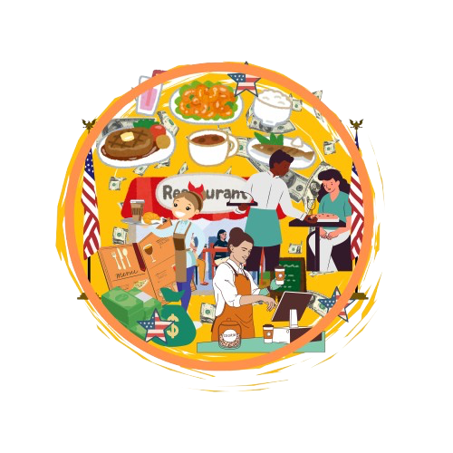
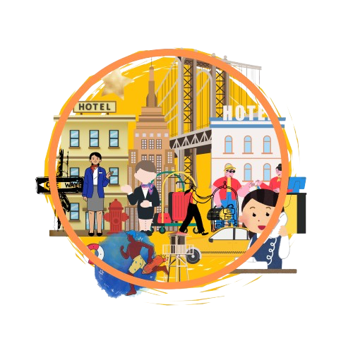

ประเภทงานในโครงการ Work and Travel
งานในร้านอาหาร
ในร้านอาหารนั้น มีตำแหน่งให้เลือกค่อนข้างเยอะ เพื่อให้เหมาะสมสำหรับผู้เข้าร่วมโครงการ จึงมีความยากและสกิลที่ต้องใช้แตกต่างกันไป โดยหน้าที่เปล่านี้จะพบในร้านจำพวกร้านอาหารใหญ่ๆ หรือ ร้านอาหาร Fastfood เช่น
・Host: ผู้ที่คอยต้อนรับลูกค้า, จัดโต๊ะ, และนำลูกค้าไปยังที่นั่ง
・Server: พนักงานเสิร์ฟ ผู้ที่รับออร์เดอร์อาหารและเครื่องดื่ม, เสิร์ฟอาหาร, และดูแลลูกค้าตลอดมื้ออาหาร
・Cashier: พนักงานคิดเงิน ผู้ที่รับชำระเงินจากลูกค้า, ออกใบเสร็จ, และจัดการเงินสด
・Busser: ผู้ที่คอยเก็บจานชาม, แก้วน้ำ, และอุปกรณ์อื่นๆ หลังจากลูกค้าทานอาหารเสร็จ
・Food Runner: ผู้ที่รับผิดชอบในการนำอาหารจากครัวมาส่งให้พนักงานเสิร์ฟ
・Dish Washer: ผู้ที่ล้างจานชาม, หม้อ, และอุปกรณ์ทำครัว
・Team Member: พนักงานทั่วไป อาจทำหน้าที่หลายอย่าง เช่น เตรียมวัตถุดิบ, ช่วยเสิร์ฟอาหาร, หรือทำความสะอาด
・Cook: พ่อครัว/แม่ครัว ผู้ที่ปรุงอาหารตามเมนูที่ร้านกำหนด

งานในสวนสนุก
แน่นอนว่าการทำงานในสวนสนุก ไม่ได้มีแค่การคุมเครื่องเล่นอย่างแน่นอน เนื่องจากการที่มีผู้เข้าใช้งานมีจำนวนมาก สวนสนุกจึงต้องการคนในหลายๆ ตำแหน่งเพื่อตอบสนองความต้องการของลูกค้า เช่น
・Attraction Team Member: พนักงานประจำเครื่องเล่น ผู้ที่คอยดูแลความปลอดภัยของผู้เล่น, ตรวจสอบอุปกรณ์, และให้คำแนะนำ
・Culinary Food Team Member: พนักงานครัวในสวนสนุก อาจทำหน้าที่ปรุงอาหาร, เตรียมอาหาร, หรือขายอาหาร
・Parking: พนักงานดูแลที่จอดรถ คอยจัดระเบียบรถยนต์และนำรถเข้าจอด
・Merchandise and Retail: พนักงานขายสินค้าที่ระลึก ผู้ที่คอยแนะนำสินค้าและทำการขาย
・Tickets: พนักงานขายตั๋ว ผู้ที่คอยขายตั๋วเข้าสวนสนุก
・Groundkeeper: พนักงานดูแลสวน ผู้ที่คอยดูแลความสะอาดและความสวยงามของสวนสนุก
งานในโรงแรม
แตกต่างจากงานในร้านอาหารหรือสวนสนุก งานในโรงแรมจะมีความเป็นระบบและมีตารางงานที่แน่นอนมากกว่าร้านอาหารและสวนสนุก โดยตำแหน่งหน้าที่งานจะเกี่ยวข้องกับการบริการลูกค้าโดยเฉพาะ โดยส่วนใหญ่มีหน้าที่ดังนี้
・Front Desk: พนักงานต้อนรับ ผู้ที่คอยให้บริการลูกค้า เช่น รับจองห้องพัก, เช็คอิน-เช็คเอาท์, ตอบคำถามต่างๆ
・Front of House/Host: พนักงานที่ทำงานส่วนหน้าของโรงแรม อาจรวมถึงพนักงานต้อนรับ, พนักงานคอนเซียร์จ, หรือพนักงานรักษาความปลอดภัย
・Back of House: พนักงานที่ทำงานส่วนหลังของโรงแรม เช่น พนักงานทำความสะอาดห้องพัก, พนักงานซักรีด, พนักงานครัว
・Housekeeper: พนักงานทำความสะอาดห้องพัก ผู้ที่คอยทำความสะอาดห้องพัก, เปลี่ยนผ้าปูที่นอน, และเติมสิ่งอำนวยความสะดวก และมีงานอีกมากมายที่ไม่ได้จัดหมวดหมู่ อาธิเช่น
・Life Guard: ชีพช่าง ผู้ที่คอยดูแลความปลอดภัยของผู้ใช้สระว่ายน้ำ ・Super Market Team Member: พนักงานในซูเปอร์มาร์เก็ต อาจทำหน้าที่เติมสินค้า, เก็บเงิน, หรือให้คำแนะนำลูกค้า
・Barista: บาริสต้า ผู้ที่ชงกาแฟและเครื่องดื่มประเภทต่างๆ ・Ice Cream Seller: ผู้ขายไอศกรีม
・Photographer: ช่างภาพ

หมายเหตุ:
รายละเอียดของแต่ละตำแหน่งงานอาจแตกต่างกันไปขึ้นอยู่กับขนาดของร้านอาหาร, สวนสนุก, หรือโรงแรม และประเภทของบริการที่ให้
ทักษะที่จำเป็น:
* ร้านอาหาร: การทำงานเป็นทีม, การบริการลูกค้า, ความอดทน, ความสะอาด
* สวนสนุก: การทำงานภายใต้ความกดดัน, ความมีน้ำใจ, ความกระตือรือร้น
* โรงแรม: การสื่อสาร, การแก้ไขปัญหา, ความใส่ใจในรายละเอียด